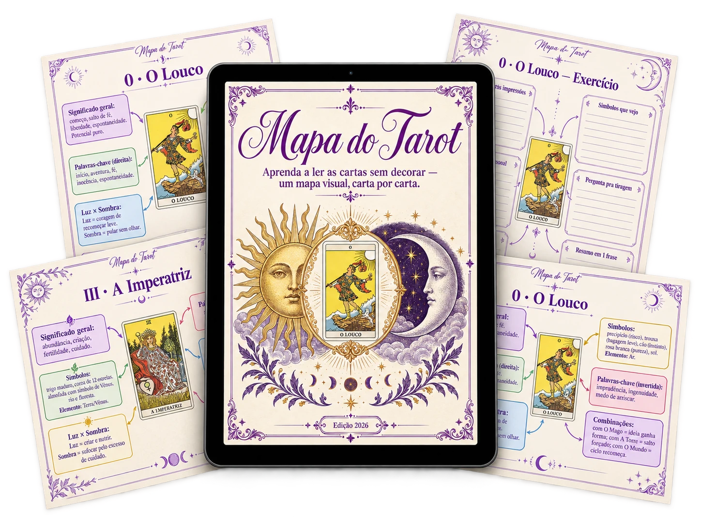
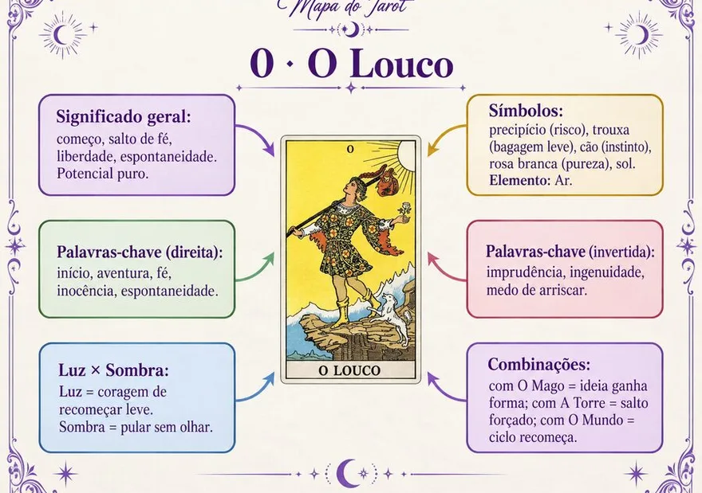
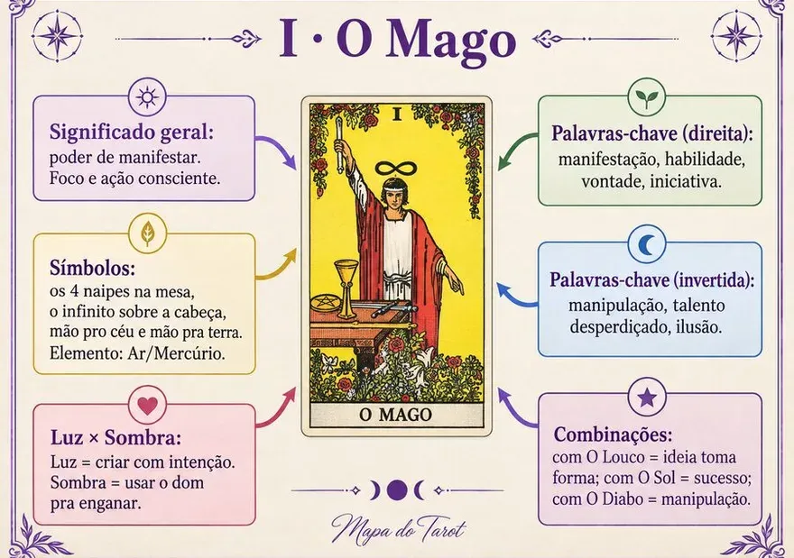
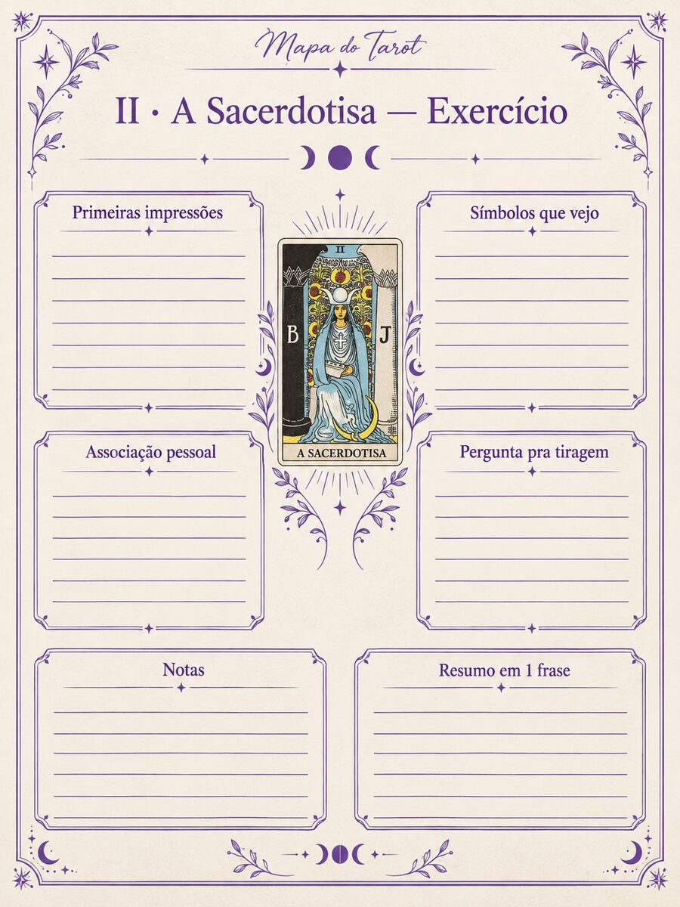
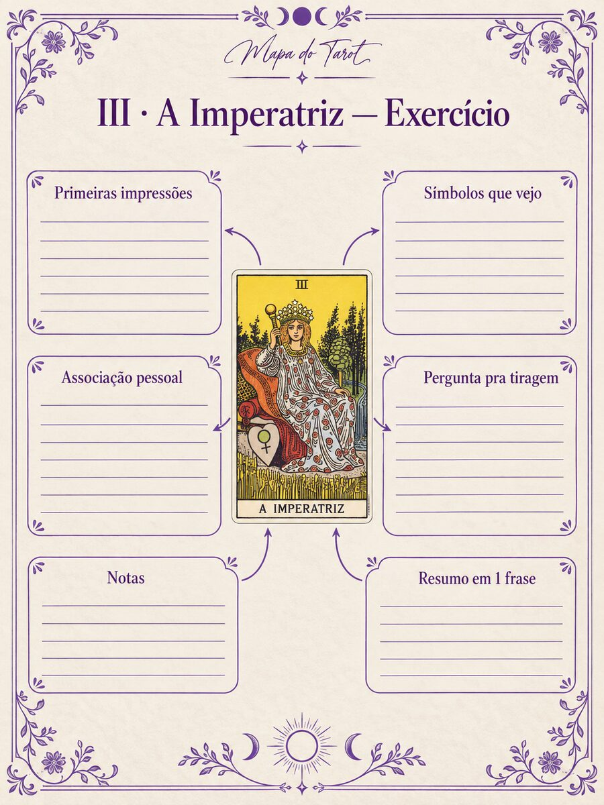
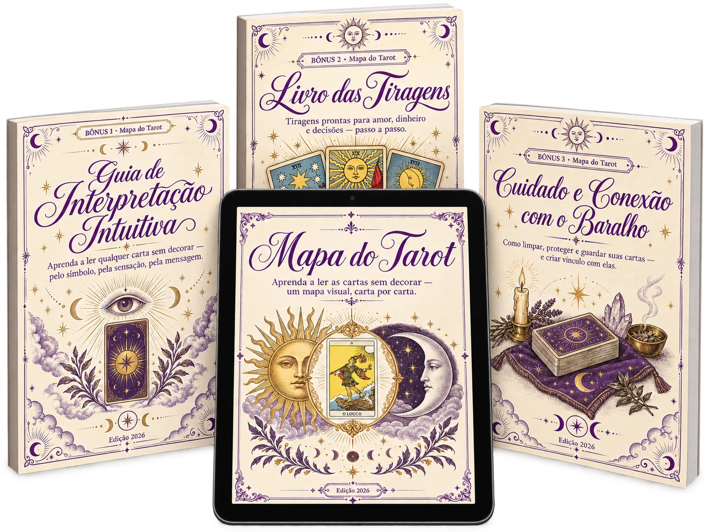
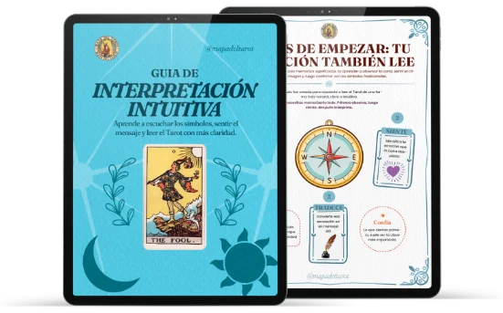
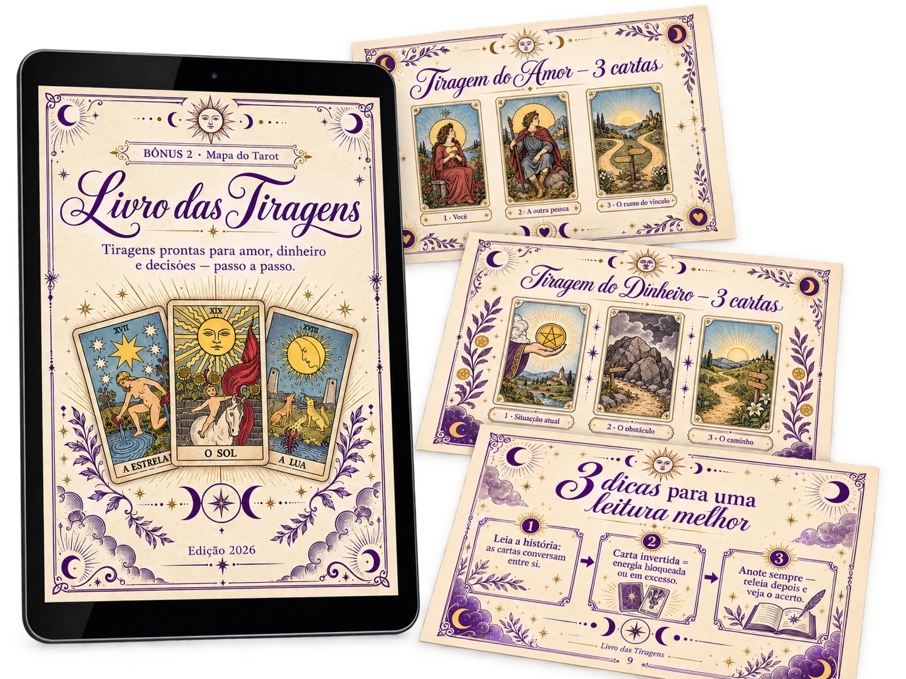
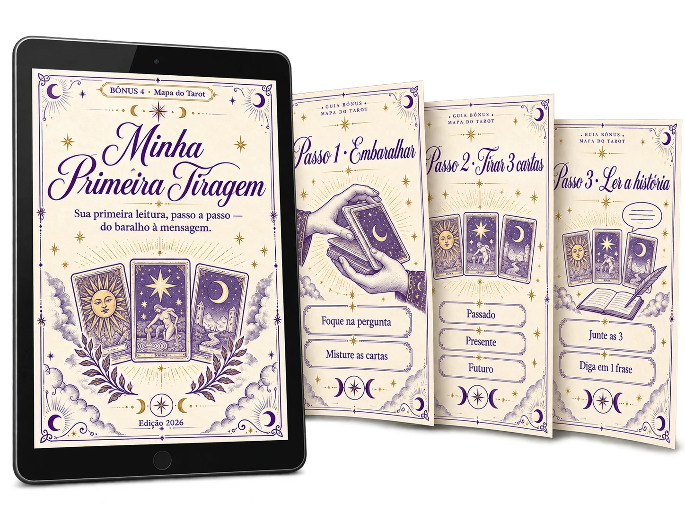

O mapa visual que explica cada carta, suas combinações e te dá uma página para praticar — para você aprender de verdade, hoje mesmo. Sem livros grossos, sem termos confusos.

Método simples, sem decorar: cada carta vem com significados claros, palavras-chave e combinações — para você ler com confiança hoje.
Aquela sensação de poder olhar uma carta e entender a mensagem que ela tem para você. Mas toda vez que você tenta, trava no mesmo ponto: 78 cartas, centenas de significados, e a ideia de ter que decorar tudo.
O Mapa do Tarot nasce exatamente aí. Em vez de listas intermináveis para decorar, você recebe um mapa visual em que cada carta é explicada de forma simples, clara e conectada com as demais.
E o mais importante: uma página para praticar o que você aprende. Porque o Tarot não se decora — se sente e se pratica.
Leia com calma. Você provavelmente vai reconhecer mais de uma.
Você assiste a um vídeo de Tarot, entende na hora… e em dois dias já não lembra de nada.
Sente que precisa decorar as 78 cartas antes de conseguir ler alguma coisa.
Tira as cartas, olha para elas e pensa: "e agora, o que isso significa junto?"
Se perde entre tantos significados soltos, sem saber como conectá-los.
Quer ler para você (ou para os seus) mas falta confiança.
Depende de apps ou de buscar carta por carta toda vez.
Aprender o Tarot como uma lista para decorar é exaustivo — e não funciona. O Mapa do Tarot usa um sistema diferente:
Cada carta se entende num só olhar: símbolos, palavras-chave, lado positivo e negativo.
Você entende o que as cartas dizem juntas — não isoladas. A mensagem completa, não fragmentos.
Você treina suas leituras passo a passo, até que ler saia natural.
Assim você não decora: compreende e pratica. A única forma de o Tarot realmente ficar com você.
✦ Um olhar real por dentro ✦




As 78 cartas — Arcanos Maiores e Menores — têm o mesmo mapa visual e página de prática.
Não é teoria: são coisas que você vai conseguir fazer.
Mesmo que hoje você não saiba nada de Tarot.
Não só cartas soltas — você interpreta a mensagem completa.
O que outros levam meses — sem decorar nada.
Com a página de exercícios, o que você vê fica com você.

★ O conjunto completoCarta por carta, em um só mapa visual
E muito mais…
+ 4 Bônus Exclusivos — 100% GRÁTIS Hoje
Para que suas leituras fiquem ainda mais poderosas, você também recebe — sem custo extra:

Aprenda a ler os símbolos, sentir a mensagem e interpretar qualquer carta com clareza — além dos significados fixos.

Tiragens prontas para amor, dinheiro e decisões — comece a ler imediatamente sem adivinhar a disposição.
Como limpar, proteger e fortalecer o vínculo com seu baralho para que suas leituras fiquem mais nítidas e pessoais.

Um percurso guiado que te leva pela mão — do zero até sua primeira leitura completa.
⏳ Esta oferta expira em:
Escolha a melhor opção para você:
Materiais em versão PDF (Entrega Imediata):
⏱ Acesso imediato logo após a compra!
Quero só o básico →ATENÇÃO: temos uma oferta ainda melhor para você! Olha só abaixo
Todos os materiais em PDF — entrega imediata:
Acesso imediato — enviado direto para o seu e-mail.
Quero o plano completo →✉ Acesso imediato enviado para o seu e-mail assim que o pagamento é confirmado · checkout seguro.
Leve o Mapa, abra, pratique. Se por qualquer motivo você sentir que não é para você, nos escreva em até 7 dias e devolvemos 100% do seu dinheiro. Sem perguntas. O risco é todo nosso — você só precisa decidir começar.
"Mas no YouTube tem vídeos de Tarot grátis…"
É verdade. E é por isso que muita gente assiste por meses sem aprender a ler de verdade. Assistir é passivo: hoje você entende, amanhã esquece. Aqui você não só aprende — pratica com sua página de exercícios até que fique com você. Isso nenhum vídeo solto te dá.
"Tenho medo de decorar as 78 cartas…"
Você não precisa decorar nada. Esse é justamente o ponto. O Mapa é visual: você entende cada carta pelos símbolos e palavras-chave, não de memória. Você lê olhando o mapa — como quem lê um mapa de verdade.
"E se eu for totalmente iniciante?"
Perfeito, é feito para você. Você começa do zero e o guia "Minha Primeira Tiragem" te leva pela mão até sua primeira leitura.
"Está tudo em português? Odeio quando aparece espanhol…"
A gente entende. Muitos e-books são traduzidos pela metade e deixam partes em espanhol que estragam a leitura. Aqui não: tudo está 100% em português, sem partes em espanhol nem mistura de idiomas.
"Isso não é conteúdo feito com IA?"
Não. Cada página foi desenhada à mão, com base em referências de grandes obras do Tarot — não gerada por IA. Por isso o material é coerente, bonito e realmente útil para aprender.
Sim. É feito para começar do zero, passo a passo, no seu próprio ritmo.
Não. É um mapa visual: você lê olhando, não de memória.
O quanto você quiser. Você avança no seu ritmo e volta quando precisar — o acesso é vitalício.
Na hora, no seu e-mail, logo após o pagamento. É 100% digital (PDF).
Cartão e os métodos disponíveis no checkout seguro.
Totalmente. Plataforma criptografada e reconhecida internacionalmente.
Você tem 7 dias de garantia. Devolvemos 100%, sem perguntas.
Sim, você pode nos escrever pelo Instagram (@auramystica.pt) ou por e-mail e a gente te ajuda.
Imagine abrir seu baralho na próxima semana e entender o que as cartas têm a te dizer — com calma, com clareza, com confiança.
Você não precisa decorar 78 cartas. Não precisa de anos. Precisa do mapa certo.
Quero começar hoje — R$27,90 →Antes de ficar com o básico, leve o Mapa Completo + os 4 bônus — o método completo — por muito pouco a mais.
Não, obrigado, continuar com o básico (R$17,90)